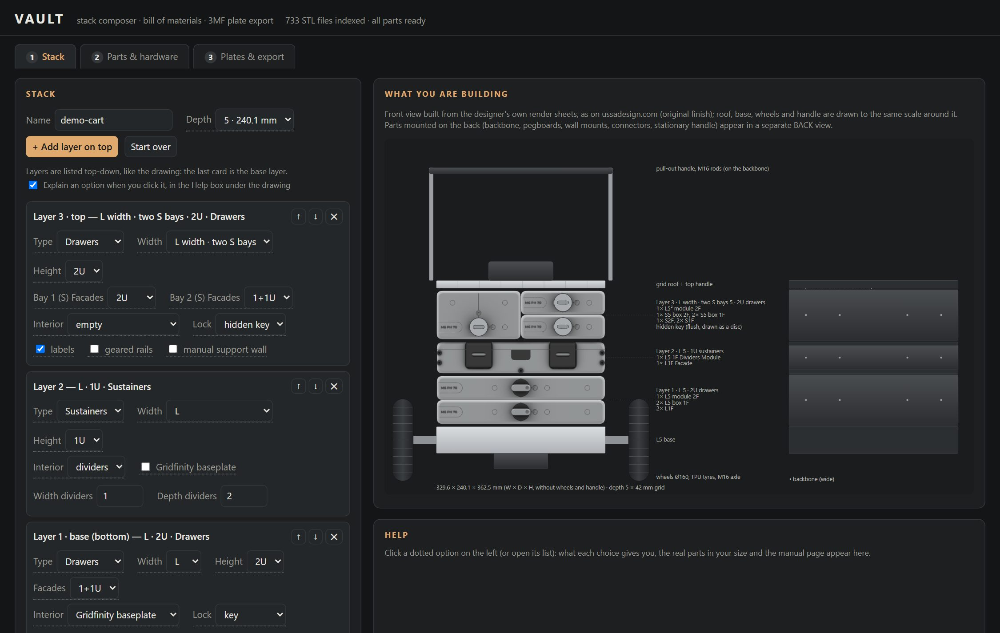
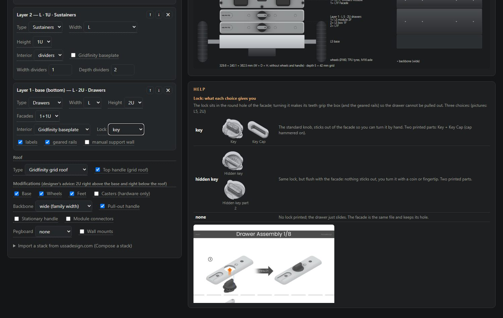
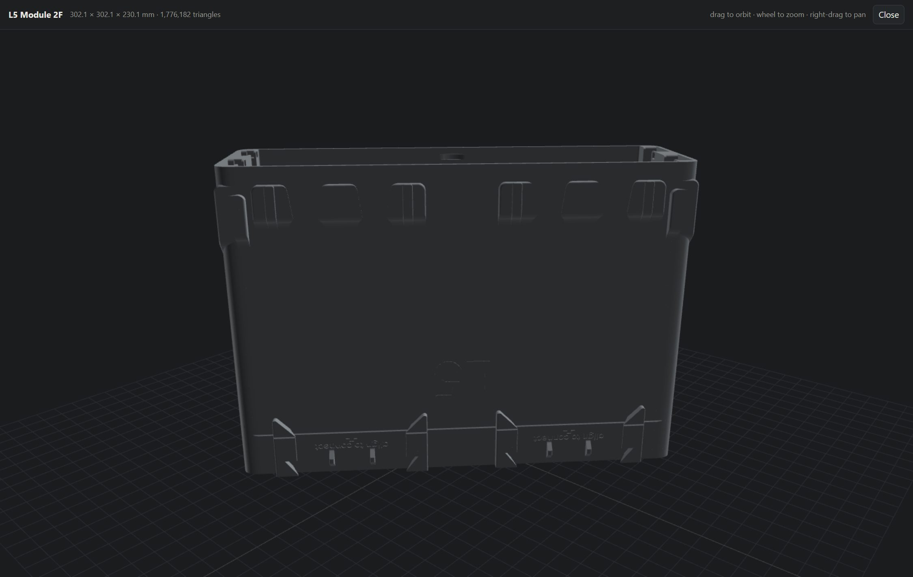
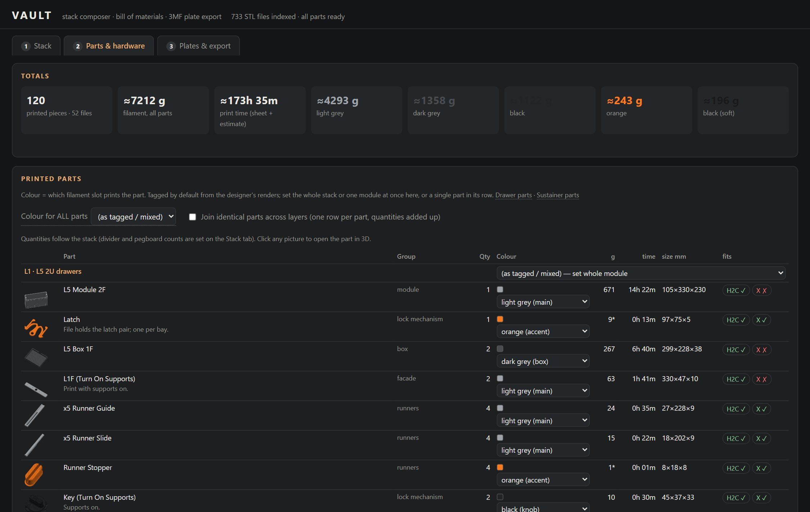
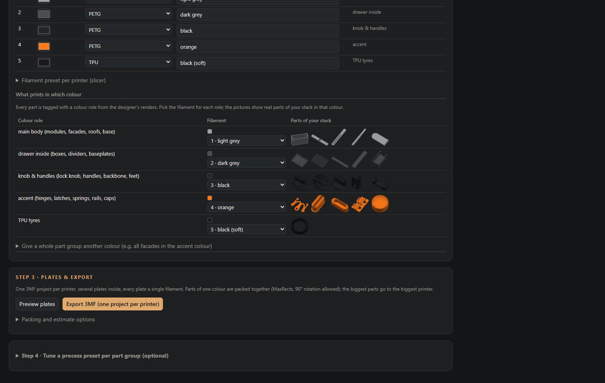
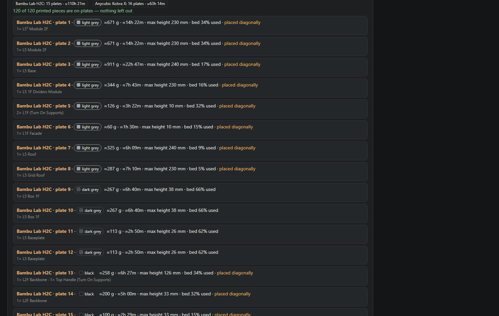
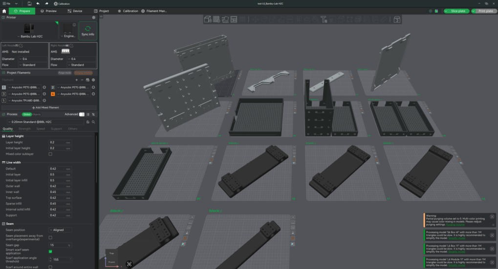
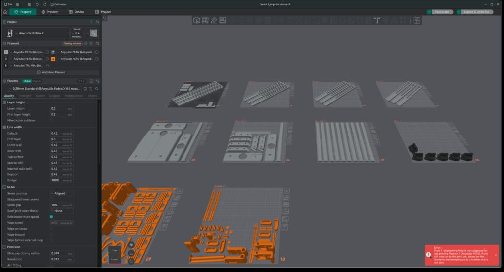
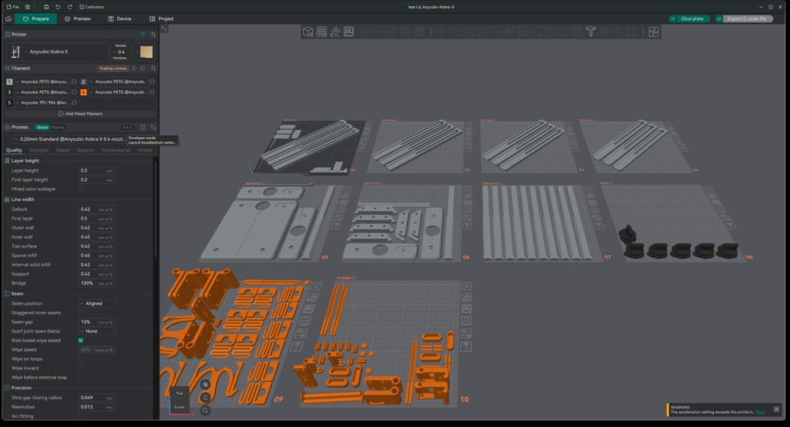

configurator · stack composer, bill of materials and print-ready 3MF plates for the USSA Design VAULT modular storage system
You bought the VAULT archive from USSA Design and want to print a whole stack, not one file at a time. This tool runs on your own computer, reads your copy of the archive, and turns a stack you compose into one 3MF project per printer with every plate packed, every plate a single colour, and the slicer presets you tuned already applied.
You need the archive. The tool ships no models, manual pages or render sheets. It only works with the folder you bought (01. DRAWERS, 02. SUSTAINERS, 03. MODIFICATIONS and the PDF manuals) and never copies it anywhere.
The archive is 733 STL files spread over family folders and four PDF manuals. One cart needs the right module, box, facade, runner, key, latch, hinge and handle files from several of those folders, counted and set up one by one. The configurator does it from the stack you compose:
See it before you printA to-scale front and back view of your stack from the designer's renders. The archive alone has no way to see how the pieces from different folders come together.
Every part, from every folderThe right file for each part of your exact layout, size and depth, including two-bay layers that mix an L² body with S boxes and facades. Checked on 18,620 stack combinations.
Shared parts joinedRunners, keys, latches, springs and other parts common to several modules are counted once across the whole stack and printed together.
Material for the whole stackFilament per colour and print time before printing anything. The demo cart: 120 pieces, about 7.2 kg, 4.3 kg of it in the main colour.
No per-file setupEvery 3MF opens with the printer, the process preset and your filaments and colours already in place.
Ready-to-print platesOne colour per plate, packed densely per printer, oversize parts across the diagonal, and every piece read back and checked on its plate.
What it does
Compose the stackLayers of drawers or sustainers (S, M, L, XL, two-bay layers), facade splits, interiors, locks, geared rails, roofs and every modification from the manuals, with the same rules as the designer's own composer. Import the site's "Your build" PDF or saved JSON.
See what you buildA to-scale front view from the designer's render sheets plus a back view for backbone, pegboards and wall mounts. Click any option for an explanation with the manual page and pictures of the real parts; click a part to spin it in 3D.
Count everythingEvery printed piece with its weight, time, size and which printer fits it, plus the bolt, rod and bearing list. Colour roles from the designer's renders (body, drawer inside, knobs, accent, TPU), changeable per stack, module, group or part.
Export to printOne 3MF project per printer (Bambu Studio, OrcaSlicer, Anycubic Slicer Next): named plates, one named object per piece, printer, process preset and filaments with your colours. Single-colour plates, dense MaxRects packing, oversize parts across the diagonal, support braces packed against their module.
Two printers, one workflowBalance print time between a big multi-material printer and a smaller bed-slinger, keep tall parts off the latter, and tune a process preset per part group with test plates.
SpoolmanPick the filament and colour per slot from the spools you actually own.
In pictures

Compose the stack: layers on the left, drawn to scale on the right.

Click an option: what each choice gives you, the manual page, the real parts in your size.

Click any part picture to inspect it in 3D.

Every piece, pictured in its colour, with weight, time, size and fit.

Colour slots, Spoolman spools, and what prints in which colour.

Plates per printer, every plate one colour, nothing left out unaccounted.

The H2C project in Bambu Studio: 14 plates, named pieces, filaments and presets set.

The Kobra X project in Anycubic Slicer Next.

The same file in OrcaSlicer.
Run it
One click, on your own computer (no server, no Python install): download the ZIP, unpack it and double-click Start VAULT (Windows).bat, Start VAULT (Mac).command (the first time: right-click, Open) or Start VAULT (Linux).sh. The first start offers to install uv, which fetches Python and the libraries into your user folder, then asks once for your archive folder. Your browser opens at http://localhost:8765. Delete archive-path.txt to choose another folder. If Windows warns about an unknown publisher, choose More info, then Run anyway.
Docker (any machine, NAS included): put your archive folder somewhere, then
git clone https://github.com/marcelfarres/vault-configurator
cd vault-configurator
VAULT_ARCHIVE=/path/to/your/VAULT docker compose up -d
# open http://localhost:8765
NAS with a stack manager (Dockhand, Portainer): paste deploy/compose.yaml, point VAULT_ARCHIVE at the dataset holding your archive, deploy. The image ghcr.io/marcelfarres/vault-configurator:latest is rebuilt on every change and pull_policy: always makes each redeploy pick it up, so a scheduled redeploy keeps the NAS current.
Plain Python (3.11+ with numpy, pypdf and pillow):
Running it on the machine that has your slicers installed lets it read your Bambu Studio, OrcaSlicer and Anycubic Slicer Next presets; in Docker, mount the slicers' config folder to get the same.
How the files are respected
The archive stays where it is and is read directly; nothing is uploaded or embedded.
Help pictures are extracted from the manual PDFs in your own archive at first start; render sheets are fetched from ussadesign.com.
Exports contain only the parts you asked for, laid out for your printers, and live in your output folder.
Status
Verified with Bambu Studio 2.8, OrcaSlicer and Anycubic Slicer Next on a Bambu Lab H2C and an Anycubic Kobra X. Rules follow the VAULT manuals and the designer's composer; where the archive leaves a count open (dividers, connectors) the tool says so.